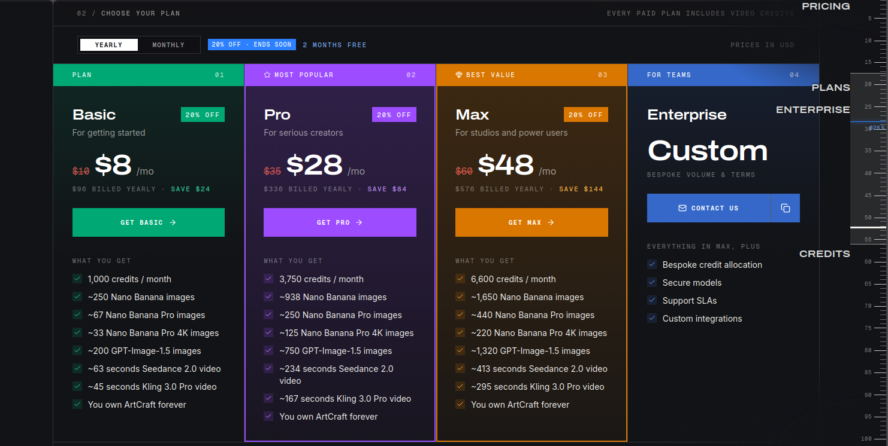
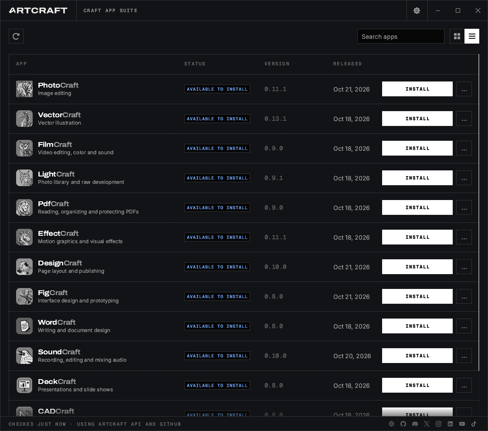
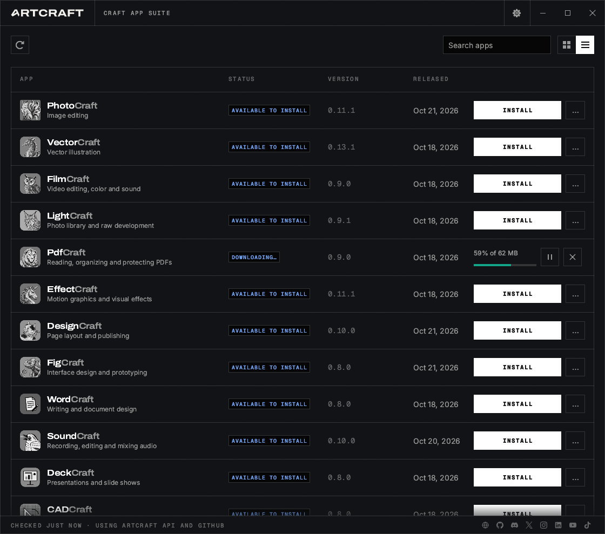
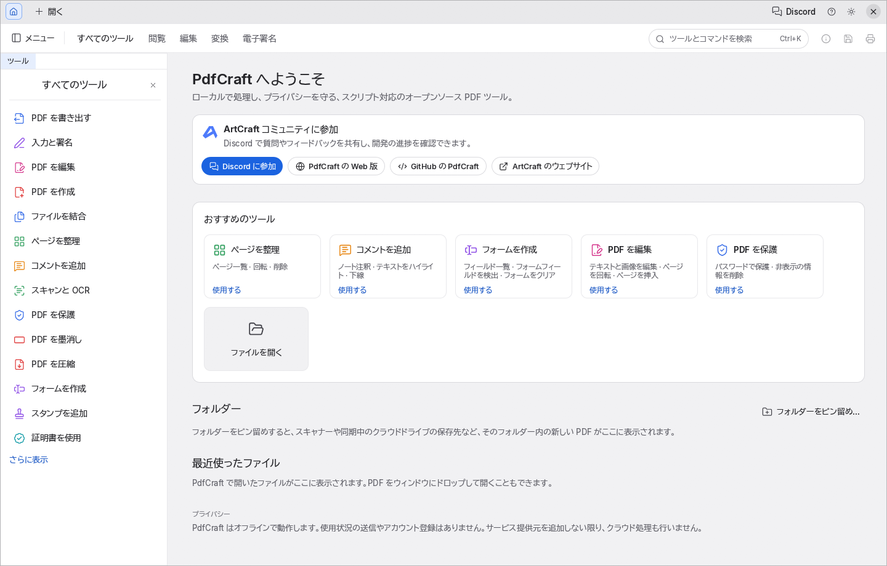
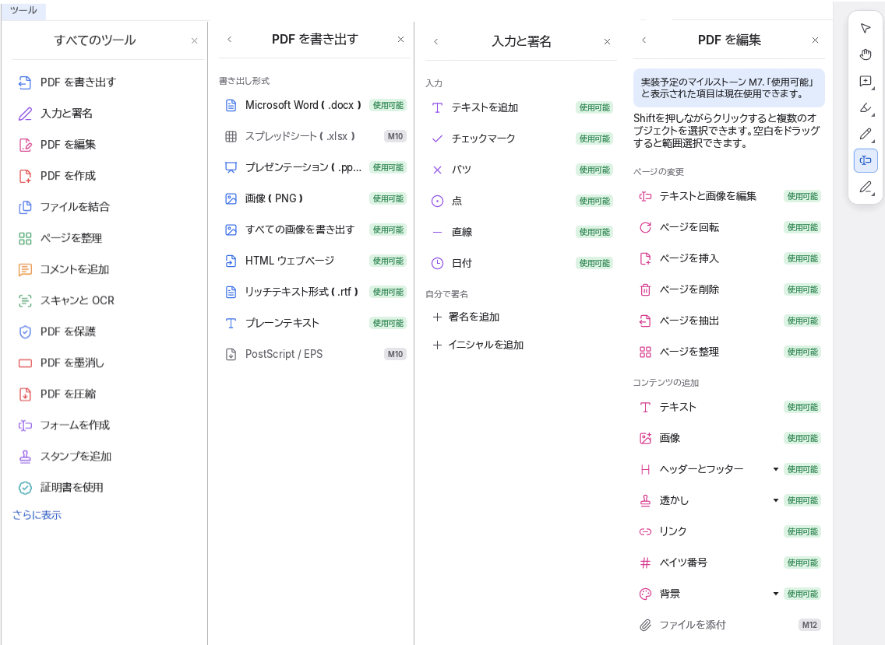

ArtCraft/PdfCraft を導入する

Bluesky の TL を眺めてたら
という記事を見かけた。
そんな中、「Adobe Photoshop」のクローンである「PhotoCraft」を開発したArtCraftが、今度は「PdfCraft」をリリースした。「Adobe Acrobat」に取って代わるこのアプリのおかげで、Linuxでもようやく本格的なPDFの編集ができるようになる。
ArtCraftの他のアプリと同じく、PdfCraftは「Rust」で書かれたもので、人工知能（AI）を用いたリバースエンジニアリングによって、Linux、「FreeBSD」、「macOS」、「Windows」向けのアプリが開発されている。このアプリを利用するのにアカウントは不要で、テレメトリーデータが送信されることは一切なく、クラウドに依存する機能もまったくない。完全にローカルで動作し、完全に無料で、すべてを自分自身で管理できる。
ほほう。 面白そうだな。早速試してみよう。
ArtCraft と PdfCraft
ArtCraft は “Controllable AI for Artists” とある通り，アーティスト向けに使いやすい AI 環境を提供しているようだ。 ArtCraft 本体はバイナリが OSS かつ無償で提供されているが，利用するためにはサブスクリプション契約が必要となる。

一方 PdfCraft は ArtCraft とは異なる製品で OSS なのは同じだが，完全に無料で利用できる。 ArtCraft アカウントも必要ない。 ArtCraft の中身を知らないのだが，もしかして PdfCraft って ArtCraft のサブツールなのかなぁ（憶測）。
まぁ，でも， AI 関連機能できっちり金を取って，人間が主に使うツールは無償で提供するってのはなかなか面白い収益構造だよなぁ。
ArtCraft Launcher と PdfCraft
Linux，特に Ubuntu では Flatpak でインストールするのがよさそうだ。 Flatpak でインストールしたパッケージはサンドボックス上で動作するため，システムを汚さず比較的安全に利用できる。
さらに PdfCraft は ArtCraft Launcher からインストールするのがよさそう。 ArtCraft Launcher は PdfCraft をはじめとする製品群の更新情報をチェックして，自動的にアップデートしてくれる。
では早速やってみよう。
ArtCraft Launcher のインストール
Flatpak 版 ArtCraft Launcher は標準リポジトリの Flathub にないみたいなので GitHub のリリースページ から *.flatpak ファイルをダウンロードする。
$ curl -LO "https://github.com/storytold/craft-launcher/releases/download/v0.6.0/artcraft-launcher-0.6.0-linux-x86_64.flatpak"
$ flatpak install --user artcraft-launcher-0.6.0-linux-x86_64.flatpak
The application ai.storyteller.artcraft-launcher depends on runtimes from:
https://dl.flathub.org/repo/
Configure this as new remote 'flathub' [Y/n]: y
Required runtime for ai.storyteller.artcraft-launcher/x86_64/stable (runtime/org.freedesktop.Platform/x86_64/26.08) found in remote flathub
Do you want to install it? [Y/n]: y
ai.storyteller.artcraft-launcher permissions:
ipc network fallback-x11 pulseaudio wayland x11 dri
file access [1] dbus access [2]
[1] home
[2] org.freedesktop.Flatpak, org.freedesktop.Notifications, org.kde.StatusNotifierWatcher
...
なるほど。 インストール時に専用リポジトリも併せて追加してるのか。 簡単でいいな。
インストールが成功すると，ドックパネルにある「アプリケーションを表示」ボタンを押すと開くアプリドロワー画面に ArtCraft Launcher アイコンが生えている（筈）。 起動するとこんな感じ。


なお，私が今回インストールした 0.6.0 は日本語が表示できなかった。 なんでかなぁ…
PdfCraft のインストール
ArtCraft Launcher 画面で PdfCraft を [INSTALL] する。


インストールした PdfCraft は ArtCraft Launcher から起動できる。 またアプリドロワー画面に PdfCraft アイコンが生えている筈なので，そこからも起動できる。


PdfCraft
よかった。 ちゃんと日本語で表示されている。 入力についても日本語で問題なく行えた。 フォームへの入力・保存も問題なし（申請書が PDF フォームになっているファイルとかあるし，大事）。 PdfCraft で編集した PDF を Windows 機に入れている Adobe Acrobat で開いてみたが，これも問題なかった。
既定で左側のサイドバーに表示されるメニュー（一部）はこんな感じ（メニュー部分だけコラージュしている）。


PdfCraft Menus
GitHub リポジトリには “PdfCraft is alpha” と書かれてるし，実際に一部まだ未実装のものもあるようだが，もう十分に実用レベルなんじゃないかな。
試しに Windows 版も手元のミニ PC に同様の手順で入れてみたが，こちらも問題なく動作した。 というか PdfCraft のほうが Acrobat より軽い気がする（体感レベルだけど）。
なお PdfCraft をはじめとするツール群は AI エージェントと連携しやすいよう MCP サーバとしても動作するらしい。 この辺がイマドキだな（笑）
しばらく使ってみて問題なければ PdfCraft に置き換えてもいいかな。 ホンマ，いい仕事してますねぇ。